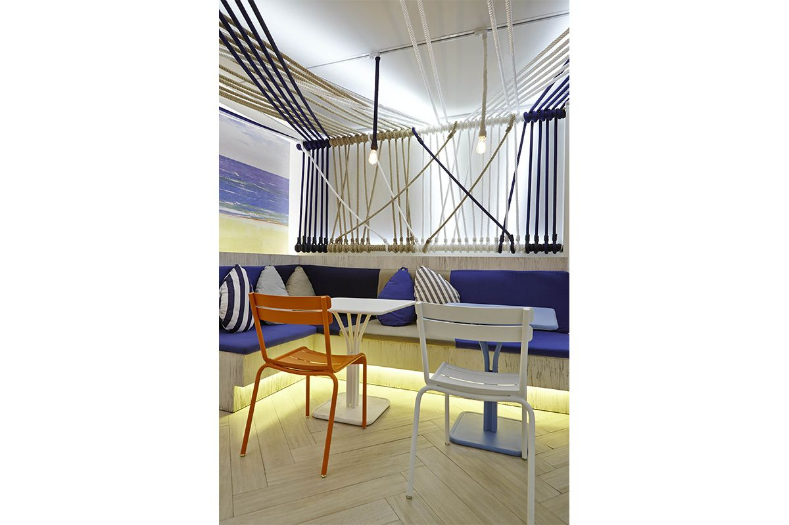
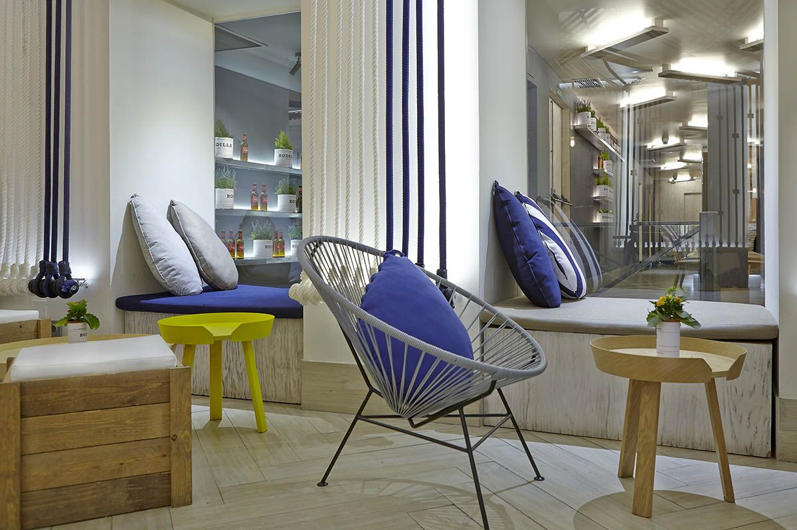

|
2014 |
Sala MediterráneaProveniente del adjetivo latino mediterraneus, significa ‘que está en medio de dos tierras’; bautizado por los romanos y hasta hoy llamado poéticamente como Mare Nostrum. En este caso, la famosa cadena española de restaurantes Rodilla acompañada de Estrella Damm, reconocida cerveza catalana, contaron con el estudio para diseñar su nueva terraza de estilo mediterráneo en plena Puerta del Sol de Madrid. Chiringuitos, playa, mar, colores vivos, frescura, calidez, vitalidad,… de todo eso habla el espíritu mediterráneo; Un particular modo de entender la vida que festeja la existencia misma. Éste fue el leitmotiv que nos guió al diseñar un espacio con vistas a la plaza más conocida de la capital y que se caracteriza por estar completamente asfaltada. Para huir del paraíso del asfalto y sentir, metafóricamente, la brisa del Mediterráneo, se buscó, ante todo, la luminosidad, el colorido y la frescura. Para conectar con este espíritu vitalista de la costa Mediterránea se utilizaron materiales rústicos que combinan con los colores cálidos de la tierra y los frescos celestes y azulones de la costa, aderezados por pinceladas multicolores. Un espacio que ante todo, debía tener personalidad propia: un paisaje marítimo de un pequeño pueblo costero, un chiringuito escondido en una playa rocosa, lleno de cabos en techos, paredes… ¡y hasta en las sillas! “Nos hemos servido de los materiales, descontextualizados, para poder traer todo ese ambiente, hemos cogido las telas, los cabos, los colores, y hemos logrado así transmitir toda la frescura y la vitalidad de la costa mediterránea” Teresa Sapey |

 |